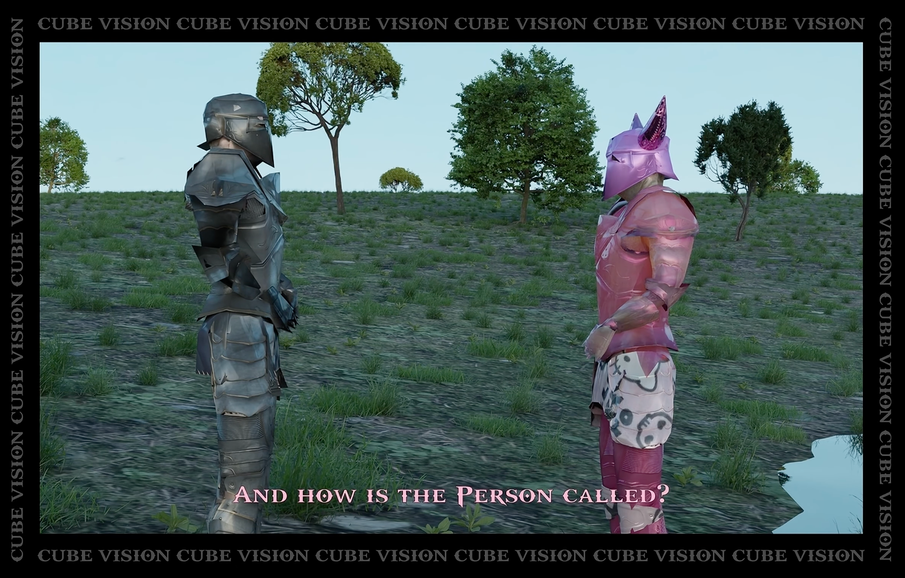
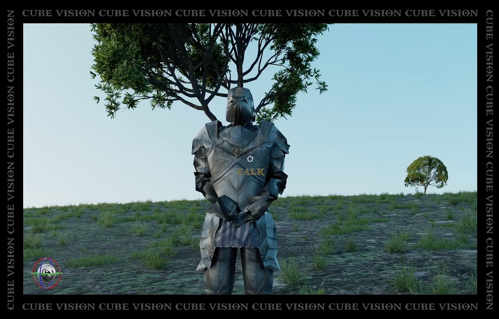

15/07/2022AudioVideo
<
today was a weird day in elden ring

„today was a weird day in elden ring“ ist ein Stück für das Visiodrom Wuppertal, das die 6500m2 große 360°-Projektionsfläche und einen 3-seitig projizierbaren Kubus bespielt. Das Stück untersucht Game ähnliche Strukturen, wie das Erledigen von Aufgaben oder Freischalten von Mechaniken als formgebende Grundlage. Auf der Suche der verlorenen „360°-Vision“ entwickelt sich das multimediale Stück.
